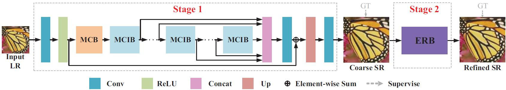
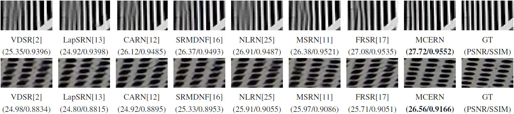

Multi-Context And Enhanced Reconstruction Network
|
|  |
Abstract
Most existing single image super-resolution (SISR) methods continually increase the depth or width of networks, without adequately exploring contextual features which are essential for reconstruction. Moreover, such existing methods pay little attention to the final high-resolution(HR) image reconstruction step and therefore hinder the desired SR performance. In this paper, we propose a multi-context and enhanced reconstruction network (MCERN) for SISR. Specifically, a novel model named Multi-Context Block (MCB) which extracts more image contextual features with multibranch dilated convolution. Applying multiple MCBs with residual and dense connections, we can effectively extract contextual and hierarchical features for obtaining the coarse super-resolution result. Then an enhanced reconstruction block (ERB) is followed to extract essential spatial features on the high-resolution image to refine the coarse result to a better result. Extensive benchmark evaluations demonstrate the efficacy of our proposed MCERN in terms of metric accuracy and visual effects.
MCERN
Visual Results
|  |
Downloads
| Paper | : [ MCERN.pdf ] |
| Experimental results | : [ Results.zip ] |
| Pre-trained model. | : [ MCERN.pth ] |
| Source Code. | : [ Code ] |
BibTex